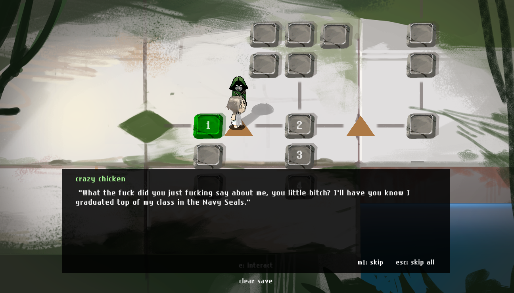
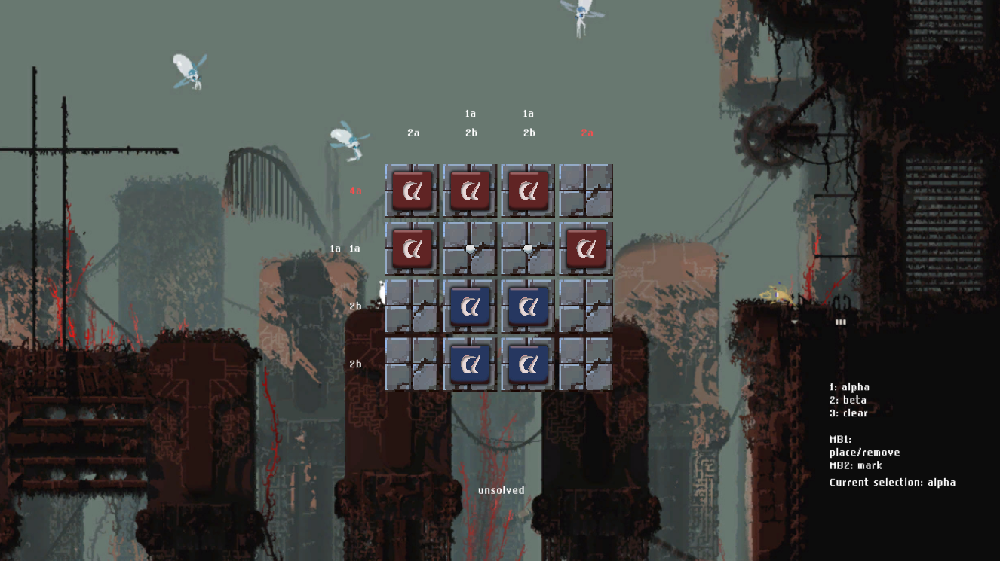
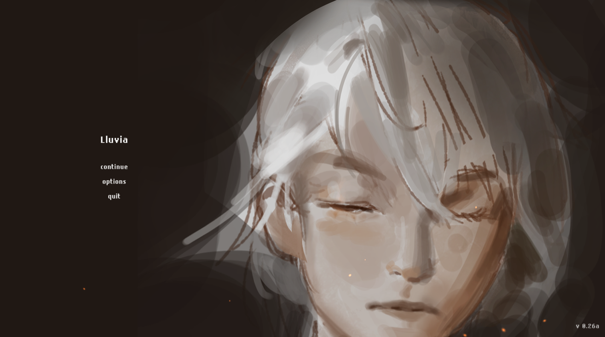

Lluvia was a puzzle game with a slight twist on nonograms. reason for dropping: Sadly, the code was getting pretty convoluted because of the difference in what I had learned over the course of development. Updating the older base was doable but a larger issue was that I didn't have much of a plan for the puzzles and what mechanics could be introduced outside what I had already done. likelihood of returning: 0/5 There was never a clear identity puzzle mechanics-wise and it wasn't developed in story either, so there's little reason to come back.


This background was a placeholder image from Rain World.
